Firebot
Firebot
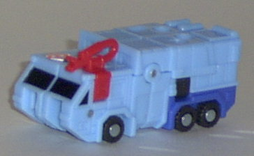 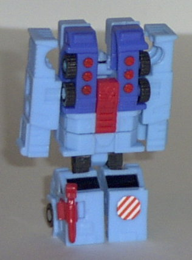 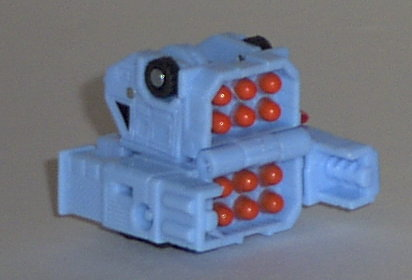
Difficulty of Transformation : Very Easy
Color Scheme : Sky blue, blue, and some charcoal black, black, orange-red, white, orange, and bright red
Individual Rating : 6.4
Emergency
Team Redeco
Allegiance
: Minicon
Size
: Mini-Con (3-pack)
Team Gimmick
: Each has a third "weapon
mode"
Overall Rating
: 6.7
(NOTE: Because this set is a repaint, this
is not a full-blown review. This mainly covers any changes made to the
mold and the color scheme, and merely compares it the original Emergency
Team. For a review on the mold itself, read the review of the original
Emergency Team
here
.)
Firebot
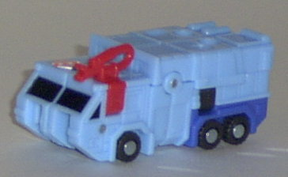
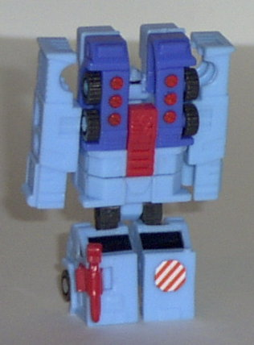
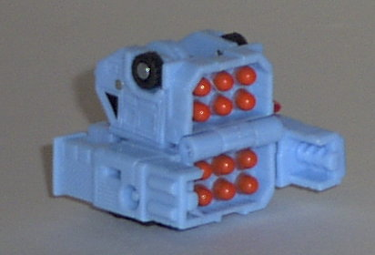
Difficulty of Transformation
: Very
Easy
Color Scheme
: Sky blue, blue, and
some charcoal black, black, orange-red, white, orange, and bright red
Individual Rating
: 6.4
This time around, Firebot
has a color scheme that is definitely a throwback to Generation One Hot
Spot, a combiner fire truck with almost the same color scheme, at least
in vehicle mode. Overall, it looks very nice on Firebot. The red is a shade
or two too bright to be ideal, but it's not that big of a problem. Also,
Firebot could use a little more paint detailing on the top in vehicle mode,
but otherwise he looks pretty nice. However, although I do appreciate the
fan nod, this kind of light blue just isn't quite as fitting for a fire
truck as red is, which is why the original Firebot pulls ahead oh-so-slightly
of this version.
No mold changes have
been made to Firebot.
Makeshift
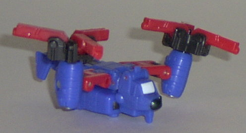
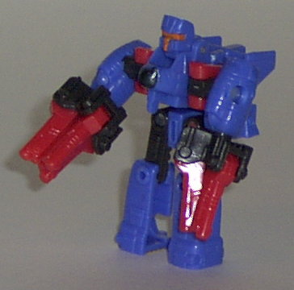
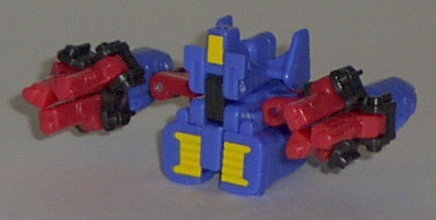
Difficulty of Transformation
: Easy
Color Scheme
: Blue, charcoal black,
bright red, and some orange, white, and yellow
Individual Rating
: 7.5
Makeshift has a blue-and-red
color scheme this time, with a bit of black and yellow thrown in for good
measure. It's not a BAD color scheme, persay, it just could be better.
The red and blue don't really mix well together, which is very odd considering
that they usually do. I guess it's just because that's pretty much all
there is, or maybe it's because the red is a little bit too bright... I
do like the yellow highlights on the weapon mode, though. They contrast
very nicely with the blue. Still, I'd have to say I like Makeshift's original
scheme noticeably better.
No mold changes have
been made to Makeshift.
Prowl
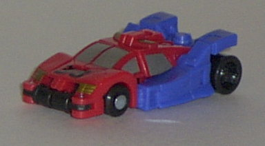
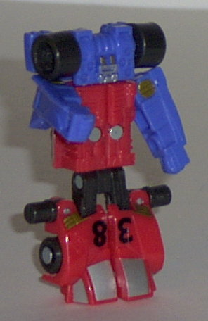
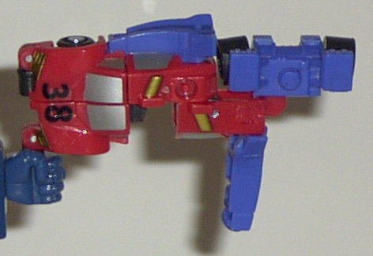
Difficulty of Transformation
: Very
Easy
Color Scheme
: Blue, bright red,
charcoal black, and some silver and gold
Individual Rating
: 6.1
My comments on this version
of Armada Prowl are pretty much as they were for Makeshift. It's not a
bad color scheme, but the red and blue don't quite match up, and I liked
the older version of Armada Prowl slightly better. (Although at least most
of his body and legs aren't made up of transparent plastic this time around...)
I really like the silver and gold paint detailing that they put on Prowl,
though. It looks really spiffy on the red and blue. Oh, and don't forget
that this is yet another Generation One fan nod- this time it's to the
original Smokescreen, given that he had the same sportscarsy alt mode,
the same general color scheme, and the number "38" on his hood. Pretty
cool, there.
No mold changes have
been made to Prowl.
Overall, I'd have to recommend the original Emergency Team over their redecoed version. Although the color schemes certainly aren't bad at all on these Minicons, all three of them are a slight step below their previous versions. Still, if you like Minicons or just enjoy the Generation One throwbacks, it's worth picking up.
No Stats
Review by Beastbot